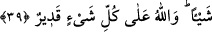

“Allah yolunda topluca savaşa çıkın.” dendiği zaman yere çakılıp kaldınız?” yani
çakılıp kalıyorsunuz?
Buradaki soru (istifham), sefere çıkmayanların bu hareketini doğru bulmama (inkar)
ve onları ayıplama ifade etmektedir.
Hangi sebep ve gerekçe hasıl oldu ve kesinleşti de size bu emir verildiğinde
ağırlaştınız, hemen dünyaya ve fânî arzularına meylettiniz, ebedî rahatı temin eden cihad
ve seferin meşakkatlerine katlanmak istemediniz?
Âyette geçen “yer” ile dünya kasdedilmektedir. Âyete: “yer ve yurdunuzda kalmaya
meylettiniz.” şeklinde mânâ verenler de vardır.
“Âhiretin yerine dünya hayatına mı râzı oldunuz?” Âhiret ve onun nimetleri yerine,
dünya hayatına, onun meyve ve gölgelerinin verdiği zevklere mi râzı oldunuz?
Cümledeki soru, onları kınama mânâsı taşımaktadır.
“Ama dünya hayatının geçimi” dünya ve onun zevkleri ile safâ sürme “âhiretin
yanında pek azdır.” değersiz ve hakirdir. Çünkü dünya geçimi fânî ve noksandır. Âhiret
geçimi ise bâkî ve arzu edilendir.
Rivayet edildiğine göre Peygamber (a.s.) şöyle buyurmuştur: “Allah’a yemin olsun,
âhiretin yanında dünya, ancak birinizin parmağını denize sokup çıkardığında
parmağında kalan kadardır. Baksın bakalım parmağında ne kalıyor?”[143]
39. Eğer topluca savaşa çıkmazsanız, (Allah) size acı veren (bir azapla) azab
eder ve yerinize sizden başka bir topluluk getirir. O’na hiçbir zarar veremezsiniz.
Allah her şeye kadirdir.
“Eğer topluca savaşa çıkmazsanız,” Allah Teâlâ “size” bedenlerinize ve
kalplerinize “acı veren” elim bir azap ile “azap eder.” Yani sizi kıtlık ve karşınıza
düşman çıkarma gibi korkunç bir sebeple helak eder. “Ve” sizi helak ettikten sonra
“yerinize” itaat eden, âhireti dünyaya tercih eden, çocuklarınızdan ve yakınlarınızdan
olmayan Yemen halkı ve Fâris oğulları gibi “sizden başka bir topluluk getirir.” Cihadı
terketmekle “O’na” Allah Teâlâ’ya “hiçbir zarar veremezsiniz.” O’nun dinine yardım
etme konusunda gevşek davranmanız O’na asla etki etmez. Çünkü O, her konuda her
şeyden müstağnîdir. “Allah her şeye kadirdir.” Sizi helak edip yerinize başka bir
topluluk getirmeye de gücü yeter.
Bilesin ki tembellik kalbe kasvet verir. Nitekim bir hadiste şöyle buyurulmuştur:
“İnsanın ahiretle veya mübah yollardan geçimle uğraşması gerekir. Din işiyle
uğraşırsa fazilet ve sevap elde eder, geçim işiyle uğraşırsa evini âbâd eder. Şayet ne
onunla ne bununla uğraşmazsa, bunun sonucu gönlü kararır ve mizacı katılaşır.” Şu